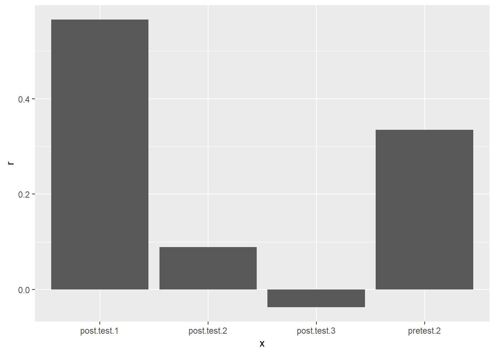

I’m very much a beginner when it comes to any formal programming. So I feel like my first real practice should be with for loops, which are a staple of programming concepts.
Much of what is below is taken from Hadley Wickham’s R for Data Science, in particular, Chapter 21 on iteration.
Baumann dataset
I’m going to use the one of the datasets that comes with the car package, called Baumann. According to the carData package documentation, data are “from an experimental study conducted by Baumann and Jones, as reported by Moore and McCabe (1993). Students were randomly assigned to one of three experimental groups.” group is a factor with three levels: Basal, traditional method of teaching; DRTA, an innovative method; Strat, another innovative method. Seeing as though it is education data, I felt it was appropriate for this blog. I load it and make it a tibble below.
library(tidyverse)
library(car)
baumann <- carData::Baumann %>%
as_tibble()
baumann## # A tibble: 66 x 6
## group pretest.1 pretest.2 post.test.1 post.test.2 post.test.3
## * <fct> <int> <int> <int> <int> <int>
## 1 Basal 4 3 5 4 41
## 2 Basal 6 5 9 5 41
## 3 Basal 9 4 5 3 43
## 4 Basal 12 6 8 5 46
## 5 Basal 16 5 10 9 46
## 6 Basal 15 13 9 8 45
## 7 Basal 14 8 12 5 45
## 8 Basal 12 7 5 5 32
## 9 Basal 12 3 8 7 33
## 10 Basal 8 8 7 7 39
## # ... with 56 more rowsFor loops
I really like Hadley’s explanation of for loops as having three parts:
- An output for the results to go in.
- The sequence that gets “looped” over.
- And the body that does the actual work.
For our example, I just wanted to get the median for all the numeric test data (removing the group variable).
output <- vector("double", ncol(baumann) - 1) # 1. output; putting the data in a double vector.
for (i in seq_along(baumann[, -1])) { # 2. sequence; sequencing along the baumann dataframe (except the first column).
output[[i]] <- median(baumann[, -1][[i]]) # 3. body; applying the median function to each column (except the first column).
}
output## [1] 9 5 8 6 45That wasn’t so diffcult! Let’s try a different version of the same for loop where instead of getting the median and putting it in a double vector, I’m running a correlation test with the first pretest and putting each one in a list. I just print the first correlation test as an example.
output <- vector("list", ncol(baumann) - 2) # 1. list vector this time.
for (i in seq_along(baumann[, c(-1, -2)])) { # 2. same as above but removing the second column as I don't want a correlation with itself.
output[[i]] <- cor.test(baumann$pretest.1, baumann[, c(-1, -2)][[i]]) # 3. running cor.test instead of median.
}
output[[1]] #just printing first item in the list.##
## Pearson's product-moment correlation
##
## data: baumann$pretest.1 and baumann[, c(-1, -2)][[i]]
## t = 2.8432, df = 64, p-value = 0.005988
## alternative hypothesis: true correlation is not equal to 0
## 95 percent confidence interval:
## 0.1010371 0.5336592
## sample estimates:
## cor
## 0.3348806Using purrr to extract list elements
Now what if I wanted to extract certain elements from all these correlation tests? purrr’s map functions is a great alternative to base R’s lapply. I’m still attempting to understand how exactly these functions work, but in the meantime, it’s easy enough to make a tibble of important statistics from each correlation for use in a simple plot.
library(purrr)
cor_summary <- tibble(
x = colnames(baumann[c(-1, -2)]),
r = map_dbl(output, "estimate"),
statistic = map_dbl(output, "statistic"),
p_value = map_dbl(output, "p.value")
)
cor_summary## # A tibble: 4 x 4
## x r statistic p_value
## <chr> <dbl> <dbl> <dbl>
## 1 pretest.2 0.335 2.84 0.00599
## 2 post.test.1 0.566 5.49 0.000000736
## 3 post.test.2 0.0888 0.714 0.478
## 4 post.test.3 -0.0374 -0.299 0.766cor_summary %>%
ggplot(aes(x = x, y = r)) +
geom_col()